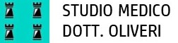

Piazza della resistenza 12, 20021
Bollate, Milano
Orari di apertura
solo su appuntamento
Lun - Sab: 8:00 - 19:00
Info e prenotazioni
02 38301345
Bollate, Milano
Lun - Sab: 8:00 - 19:00
02 38301345
Molti denti sono ormai compromessi quando le cause nascoste delle malattie a loro associate sono diagnosticate troppo tardi. E’ per questo che grazie ad un Programma Personalizzato di Prevenzione siamo in grado, con la vostra collaborazione, di effettuare tutte le manovre preventive ed una diagnosi precoce. Visite di controllo ogni 6 mesi di denti, gengive e mucose orali permettono di intercettare eventuali problematiche che difficilmente il paziente può autonomamente percepire.
L’igiene orale consiste nell’eliminazione della placca batterica in eccesso presente su denti e gengive che, una volta solidificata, viene denominata tartaro. Per questa eliminazione ci si avvale di strumenti specifici in quanto l'igiene domestica non è più sufficiente L'igiene orale è eseguita dal dentista o dall'igienista dentale ed è consigliabile effettuarla ogni 6 mesi, tuttavia la frequenza varia da paziente a paziente e molto dipende dall’igiene domiciliare quotidiana.
Per implantologia dentale si intende l’inserimento di una radice artificiale, sottoforma di impianto, ancorata direttamente all’osso al fine di ripristinare la masticazione del paziente in caso di edentulia parziale o totale. Gli impianti sono realizzati in titanio, materiale estremamente compatibile e molto resistente. Ci sono varie tecniche per inserire gli impianti dentali tra le più note quella classica e quella chirurgica. E' necessaria la fase di progettazione anticipatamente al lavoro per definire la posizione degli impianti.
L’ortodonzia è quella branca dell’odontoiatria che tende a correggere le malformazioni del mascellare superiore, della mandibola e le malocclusioni ovvero le anomalie di posizione degli elementi dentali. Le malocclusioni dentali provocano significative alterazioni dell'equilibrio fra struttura dentale, strutture ossee, muscolari ad essa collegata e sistema neuromuscolare e osteoarticolare. Ciò significa che le patologie occlusali potrebbero agire negativamente a livello della colonna vertebrale e a livello cranico, provocando cefalee, squilibri posturali, algie cervicali e vertebrali, disturbi della vista e dell'udito. L'ortodonzia moderna non si limita dunque al corretto allineamento dei denti, ma promuove il raggiungimento di un equilibrio ottimale fra efficienza della masticazione, salute dentale, estetica del sorriso e benessere complessivo del paziente.
Con endodonzia si intende quella branca dell’odontoiatria che si occupa della cura delle radici dentarie in seguito a problematiche riguardanti il nervo dentario. L’endodonzia quindi si occupa della devitalizzazione degli elementi dentari per svariati motivi tra i quali infezioni, pulpiti o devitalizzazioni a scopo protesico. Da sempre la filosofia dello studio Oliveri è quella di cercare di recuperare la maggior parte degli elementi dentari compromessi.
Un bel sorriso rappresenta sempre un’arma vincente nella vita, sia nel lavoro che nella vita privata. Tuttavia il modello estetico proposto dalla stampa e dalla televisione rappresenta un ideale molto lontano dalla normale quotidianità. Oggi però questa distanza può essere colmata dai moderni trattamenti estetici odontoiatrici. Il sorriso delle star è frutto di interventi di cosmetica finalizzati al miglioramento dell’estetica, ormai alla portata di tutti. Sbiancamento, faccette e corone in porcellana, ortodonzia invisibile sono solamente alcune delle armi di trattamento che possono modificare in maniera radicale il sorriso di ciascuno di noi.
Siamo convinti che il rapporto tra medico odontoiatra e paziente non debba esprimersi solo attaverso la consueta “seduta dal dentista”, ma è necessario infondere un senso di assoluta sicurezza nel paziente, che spesso si trova a dover affrontare problemi dentali senza un’adeguata infomazione e non sufficientemente coinvolto nelle scelte sanitarie del proprio medico dentista.
Lo Studio Oliveri offre alta qualità e competenza nell’assistenza sanitaria dentistica, aiutando a risolvere in modo definitivo problemi dentali di diversa natura. Sia che si tratti di problemi dentali importanti per cui risultino necessari interventi chirurgici, sia per problemi relativi all'estetica dentale, per garantire ai nostri pazienti sempre le migliori prestazioni, lo Studio Oliveri, da sempre, collabora esclusivamente con professionisti garantiti e certificati nel panorama italiano ed internazionale.
Presso lo Studio Oliveri utilizziamo esclusivamente attrezzature e strumentazione di massima qualità, igiene e di tecnologia avanzata. Questo ci permette un approccio efficace e veloce, garantendo la massima precisione, minima invasività e massimo confort durante le cure del paziente.
Le procedure di sterilizzazione adottate dallo studio Oliveri vengono effettuate allo scopo di garantire materiali e strumenti odontoiatrici sicuri per poter essere utilizzati sul nuovo paziente. Lo studio Oliveri svolge questa attività seguendo le rigide norme indicate dal D.M. 28/09/1990 del Ministero della Sanità, le quali oltre a rendere obbligatoria la pratica di sterilizzazione degli strumenti odontoiatrici, indicano anche i materiali che devono essere sottoposti a sterilizzazione prima di essere riutilizzati.
La lunga esperienza in campo odontoiatrico ci conferma che uno degli aspetti fondamentali per la buona riuscita di qualsiasi trattamento, intervento o terapia è quello di conoscere la storia odontoiatrica pregressa del cliente. Chiediamo al paziente informazioni come il suo stato di salute: i problemi ai denti avuti in passato, le terapie seguite, eventuali farmaci che si stanno assumendo.
Lo Studio Oliveri ritiene fondamentale avvicinarsi ai problemi odontoiatrici del paziente mediante un approccio multidisciplinare che tenga in considerazione non solo i problemi dentali, ma ogni componente del corpo collegata alla bocca. A seconda della complessità, presso lo Studio Oliveri si procede ad un'analisi propedeutica per effettuare una diagnosi il più esauriente e completa possibile della situazione odontoiatrica del paziente. Nello specifico si procede ad un'analisi delle arcate dentarie, dell'occlusione dentale ed un'approfondita verifica paradontale.
Rimani in contatto con lo studio Oliveri e non perdere le ultime novità